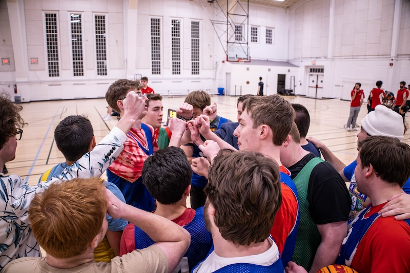

Gibby Hurt drives to the basket./Photo credit: Rose Fernandes
Captain Jack Bowman drives to the paint./Photo credit: Rose Fernandes
Ben Strober goes up for a layup./Photo credit: Rose Fernandes
Slam dunk by Jack Bowman./Photo credit: Rose Fernandes

The team huddles up after a time out./Photo credit: Rose Fernandes
Soccer Season Photos
Charly Naves dribbles up the field./Photo credit: Rose Fernandes
Captain Tyler Lochte sends a ball acorss with a corner kick./Photo credit: Rose Fernandes
Ethan Fabyan congratulates Dash Tischler on a play./Photo credit: Rose Fernandes
Goalie Colby Stevens makes a save./Photo credit: Rose Fernandes
Martins Okorie shields the ball from a defender./Photo credit: Rose Fernandes
Sam Yeo shows off his skills./Photo credit: Rose Fernandes
The team poses in the goal after their playoff elimination./Photo credit: Rose Fernandes